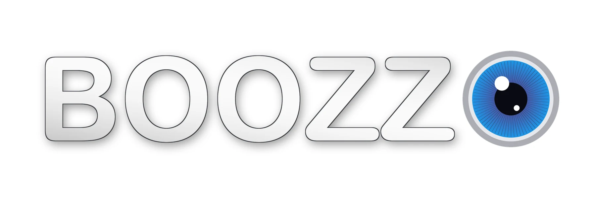
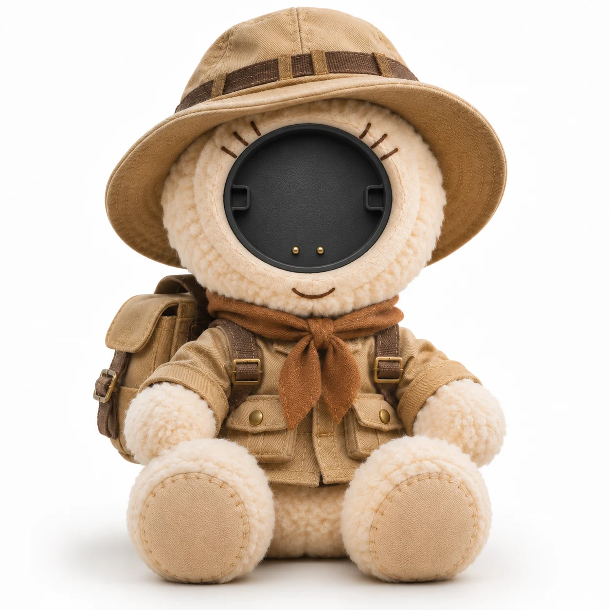
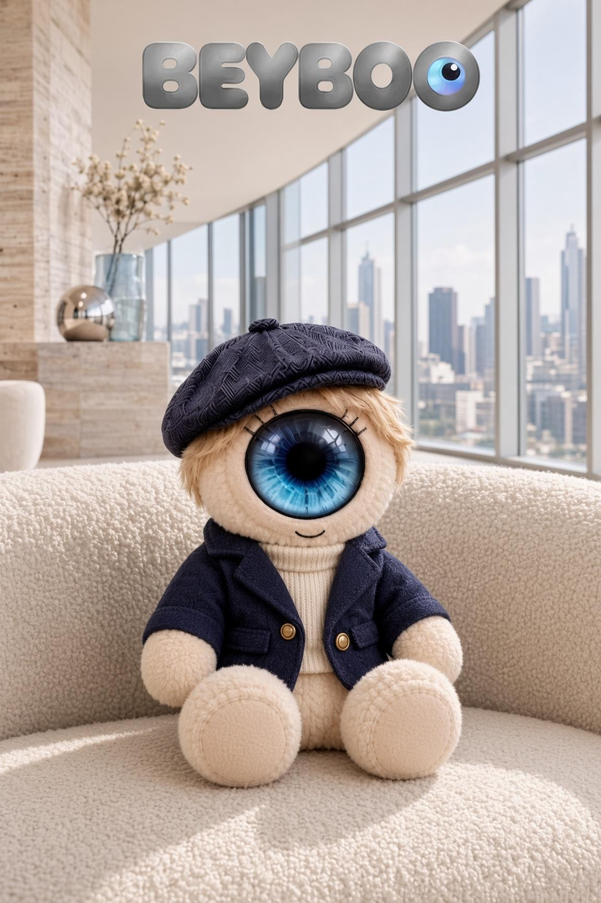
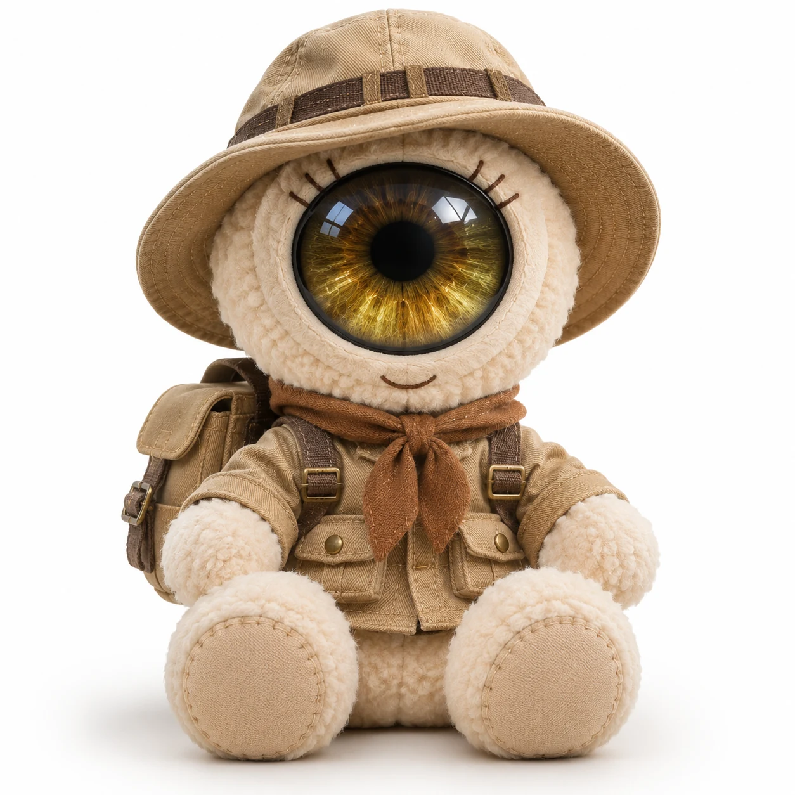
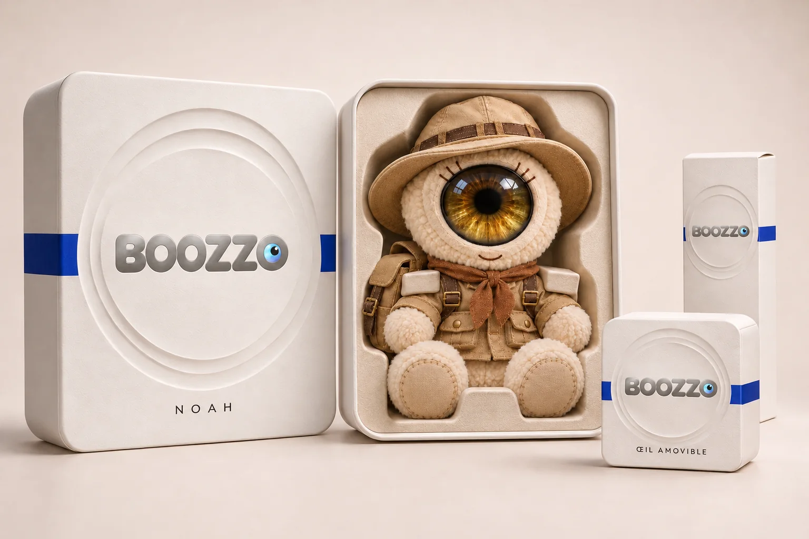
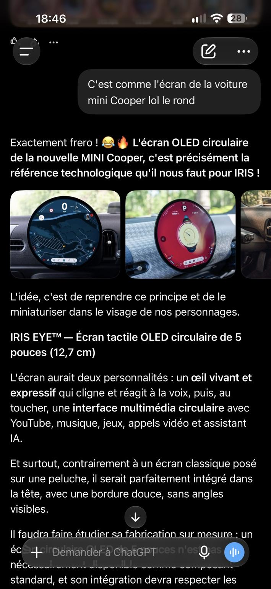

01
Aligner
Présentez l’écran face au logement.

BONJOUR, NOUS SOMMES BOOZZO.
Un écran qui s’emporte.
Un compagnon qui vous ressemble.
Et toute une histoire à partager.
Une vraie peluche immobile.
La vie se passe dans son écran.
Découvrez la collection en développement
LE QUOTIDIEN PREND UNE AUTRE DIMENSION
Une vidéo qui passionne. Une voix qui rassure. Une réponse qu’on trouve tout seul. Six scènes pour imaginer BOOZZO dans leur quotidien.
BOOZZO ONE
Commencez par l’écran seul, ou rencontrez votre première peluche. L’idée : un module tactile circulaire qui se détache et se clipse dans le visage de votre compagnon.
Votre écran vous suit. Votre peluche garde sa place dans votre histoire.
Écran clipsé dans Noah.

BOOZZO OneAnimation du principe envisagé. Fixation, dimensions et compatibilités à valider sur prototype.
BEAU SOUS TOUS LES ANGLES
Un module pensé pour parler et écouter, même hors de la peluche. La grille laisse sortir la voix ; une ouverture séparée sur la tranche accueille le micro.
Concept à valider sur prototype : acoustique avec et sans peluche, protection des ouvertures, fixation et électronique.
UN GESTE TOUT SIMPLE
Le même écran. Votre compagnon préféré.
Découvrez le geste, de gauche à droite.
Présentez l’écran face au logement.
Guidez le module dans son logement.
L’œil est en place. Son univers s’ouvre.
LES COMPAGNONS
Des carnations et des coiffures variées, des matières douces et dix personnalités. Un compagnon dans lequel se reconnaître, une histoire à partager.
La lecture n’a pas démarré. Ouvrir la vidéo
NOAH · LA PETITE AVENTURE
Il a repéré son œil. Reste à convaincre le logo de le lui rendre. Douze secondes pour découvrir le côté malicieux de Noah.
Un film d’animation de notre mascotte.
Izan, Sana, Rayan et Léa se découvrent en deux carnations : ouvrez leur fiche pour choisir. Chaque personnage garde sa propre histoire. Visuels de conception photoréalistes.
MILA · UN INSTANT DE DOUCEUR
Un câlin, un regard, une petite pause dans la journée. Mila trouve sa place dans les bras de son amie.
Film de conception. Le regard s’anime à l’écran.
La lecture n’a pas démarré. Ouvrir la vidéo
BOOZZO WORLD
Nos compagnons partent à la rencontre du monde. Douze éditions inspirées de tenues, de couleurs et d’ambiances locales. À chacun son histoire, à chacun son BOOZZO.
Éditions imaginées à partir d’inspirations vestimentaires locales. Touchez un visuel pour l’agrandir. Les peluches restent immobiles ; seul leur œil-écran est destiné à s’animer.
LA COLLECTION BOOZZO
Six présidents, une première dame et une reine. Touchez leur œil pour découvrir la réplique de chaque peluche.
Caricatures de collection. Répliques imaginées par BOOZZO et voix fictives générées par IA.
Les portraits n’ont pas pu être chargés. Rechargez la page pour réessayer.
TOUCHEZ. EXPLOREZ. SOURIEZ.
Le corps reste immobile. L’écran, lui, change d’univers : touchez, jouez, lancez une vidéo ou essayez une conversation.
LA PELUCHE. SON ÉCRAN. EN DIRECT.

Loupe de l’écran La même activité, en plus grand.
Touchez l’œil pour ouvrir son univers.
Touche une couleur pour essayer le halo.
Caméra éteinte · suivi du visage sur ton appareil.
CAMÉRA · SUR TON APPAREIL
Cette démo utilise la caméra du téléphone ou de l’ordinateur, après ton autorisation. Images et détection restent sur cet appareil, sans envoi à OpenAI. Elle repère la présence d’un visage, sans identifier la personne. La photo disparaît en quittant ce mode, sauf si tu l’enregistres.
TON PETIT MONDE, CONNECTÉ.
Choisis une activité. Regarde son œil se transformer.
Et imagine votre quotidien ensemble.
À CHACUN SA PETITE VOIX
Pétillante, malicieuse ou tout en douceur. Écoute, puis choisis celle qui te plaît.
Un petit personnage pétillant, léger et souriant.
Un court extrait, sans activer ton micro.
12 interprétations sur 10 timbres. Voix générées par IA. Les extraits utilisent les crédits API de cet essai.
Essaie « ouvre un calcul », « vidéo sur la Lune » ou « météo à Paris ».
La dictée peut transmettre ta voix au service vocal de ton navigateur.Touche son œil pour ouvrir ses applications, le micro pour parler. Son corps reste immobile.
À VOUS DE JOUER
Une pupille qui accompagne votre geste, des couleurs qui changent au toucher. Choisissez son expression.
Prêt à discuter ?
Tu peux aussi toucher une action pour la tester.
Essaie : « Montre-moi une vidéo », puis « Mets en pause ».
Voix générée par une IA. Cet essai utilise les crédits API de ton compte. Ton audio est transmis à OpenAI pendant l’essai. Le micro se coupe à l’arrêt ou en quittant la page. Essai de 3 minutes ; aucun enregistrement audio conservé par ce site.
Consulter mes crédits API OpenAI ↗Se connecter au site ↗Choisis un film dans la sélection, écris un sujet ou colle un lien YouTube.
Tes paroles et les réponses s’afficheront ici. La transcription peut être imparfaite.
Prêts pour un vrai coucou ?
Le lien ouvre BOOZZO et demande le code famille : seuls vos proches peuvent rejoindre l’appel. Il cesse de fonctionner quand vous raccrochez.
Les appels passent directement entre vos appareils ; BOOZZO ne relaie que la mise en relation. Caméra et micro de votre téléphone ou ordinateur, après votre autorisation ; sans caméra, l’appel passe en audio seul. Cet appel n’utilise pas les crédits OpenAI.
Dans cette démo : conversation IA, vidéo, jeux, calculs, histoires et musique. La photo utilise la caméra de ton appareil ; les appels vidéo relient directement les appareils de la famille.
Pour le futur produit : le matériel, son autonomie et l’intégration Android restent en développement. Le Play Store et les appels WhatsApp natifs ne sont pas intégrés à cette application web.
ALYA · LE PLAISIR D’APPRENDRE
L’enfant choisit 12, l’écran confirme la réponse, puis une nouvelle question apparaît. Un petit geste qui rend l’échange concret.
Mise en scène d’un usage en développement. Le corps de la peluche reste immobile.
La lecture n’a pas démarré. Ouvrir la vidéo
L’UNIVERS AUTOUR DE VOUS
Un casque pour s’évader. Une montre pour garder le lien. Un socle pour se poser. Imaginez votre quotidien avec BOOZZO.
Concepts d’accessoires. Fonctions connectées et compatibilités à développer.
LES PETITS OBJETS. LE GRAND UNIVERS.
Un mini-compagnon sur votre sac. Votre personnage sur une gourde. Les mêmes regards, à retrouver dans les petits rituels du quotidien.
Des objets utiles, des détails à collectionner.
Sur ces accessoires, le regard est décoratif.
Collection imaginée pour prolonger l’univers BOOZZO. Ces produits dérivés n’intègrent ni écran ni électronique. Prix à l’unité en euros. Collection en préparation.
À CHACUN SON BOOZZO
À la maison, au bureau, entre générations. Dix instants imaginés pour raconter la place de nos compagnons dans votre quotidien.
La lecture n’a pas démarré. Ouvrir la vidéo
AARON · GARDER LE LIEN
Le petit-fils fait coucou. Mamie sourit dans l’écran d’Aaron. Un moment tout simple, même à distance.
Appel mis en scène pour présenter le concept. Fonction connectée en développement.
Visuels de campagne conceptuels. Les peluches restent immobiles ; seul le contenu de leur écran est destiné à s’animer.
VOTRE BOOZZO, À VOTRE FAÇON
L’écran d’abord. La peluche maintenant ou plus tard. Composez l’ensemble qui vous ressemble.

Un regard et son premier compagnon.


UNE TECHNOLOGIE QUI EXISTE DÉJÀ
Le spectaculaire écran circulaire de MINI est développé avec Samsung Display. C’est la référence concrète derrière notre idée : une surface tactile ronde, capable d’afficher bien plus qu’un regard.
Pour BOOZZO, un format adapté, une fixation amovible, la gestion de la chaleur et l’autonomie restent à étudier avec un fabricant. Le module automobile n’est pas directement réutilisable dans une peluche.
La présentation officielle MINI × Samsung Display ↗Référence technologique indépendante. Aucun partenariat BOOZZO avec MINI ou Samsung Display n’est annoncé.
LE CARNET DE L’ATELIER
Une étude visuelle autour de Sonic, imaginée pour présenter l’idée d’une future collaboration. Le principe BOOZZO : un personnage reconnaissable, un regard circulaire et une peluche qui garde toute sa douceur.
PROPOSITION CRÉATIVEConcept non officiel, sans partenariat annoncé et non commercialisé.
EN TOUTE SIMPLICITÉ
Non. BOOZZO est une peluche immobile : son corps, sa tête, ses bras et sa bouche ne sont pas motorisés. Seul le contenu de l’écran peut s’animer. Le module se retire et se clipse à la main.
Non. Les produits dérivés reprennent les personnages et leur regard sous forme décorative. Seul le module BOOZZO One et les accessoires connectés présentés comme tels font partie du concept électronique.
C’est le principe de la gamme envisagée : BOOZZO One seul, un duo écran et peluche, puis d’autres compagnons et accessoires séparément. Le configurateur permet déjà de préparer cette sélection ; la vente n’est pas encore ouverte.
Le concept prévoit un module circulaire démontable avec une fixation dans le visage. L’animation illustre le geste. Le mécanisme de clipsage, sa résistance et les conditions d’utilisation devront être définis et testés sur les prototypes.
Oui. Noah cherche les histoires au bout des chemins, Alya invente des jardins de papier, Sana collectionne les petits moments paisibles… Ouvrez la fiche de chaque compagnon pour découvrir son récit et sa personnalité.
Le site propose trois jeux tactiles, un clip animé original, cinq morceaux de musique gratuits, des histoires et un essai de conversation vocale avec OpenAI. Cet essai nécessite des crédits API disponibles et votre autorisation pour le microphone ; vous pouvez aussi écrire une question. Le mode Appel vidéo relie directement deux appareils de la même famille (WebRTC) : un proche connecté avec le code famille appelle, l’autre accepte dans l’œil, ou partage un lien d’invitation. La caméra et le micro du téléphone ou de l’ordinateur ne sont demandés qu’au démarrage de cet essai. Ce n’est pas un appel WhatsApp. BOOZZO ne relaie que la mise en relation ; un serveur TURN peut être nécessaire derrière certains réseaux. L’Assistant IA peut maintenant piloter les activités de cet écran. YouTube fonctionne avec une vidéo de sélection ou un lien collé ; une recherche libre propose jusqu’à cinq vidéos issues d’une sélection de chaînes adaptées aux enfants. Certaines vidéos et certains navigateurs demandent un toucher pour lancer la lecture. Le matériel de la peluche reste à développer.
Les images sont des visuels de conception photoréalistes créés pour présenter la direction des matières, des personnages et des accessoires. Les photos des prototypes et les caractéristiques validées les remplaceront à mesure du développement.
AARON · LE BONHEUR D’ÊTRE ENSEMBLE
Une grand-mère, son petit-fils et une découverte à partager. L’écran d’Aaron ouvre une aventure ; les sourires font le reste.
Film de conception. Les contenus s’animent dans l’écran de la peluche.
La lecture n’a pas démarré. Ouvrir la vidéo